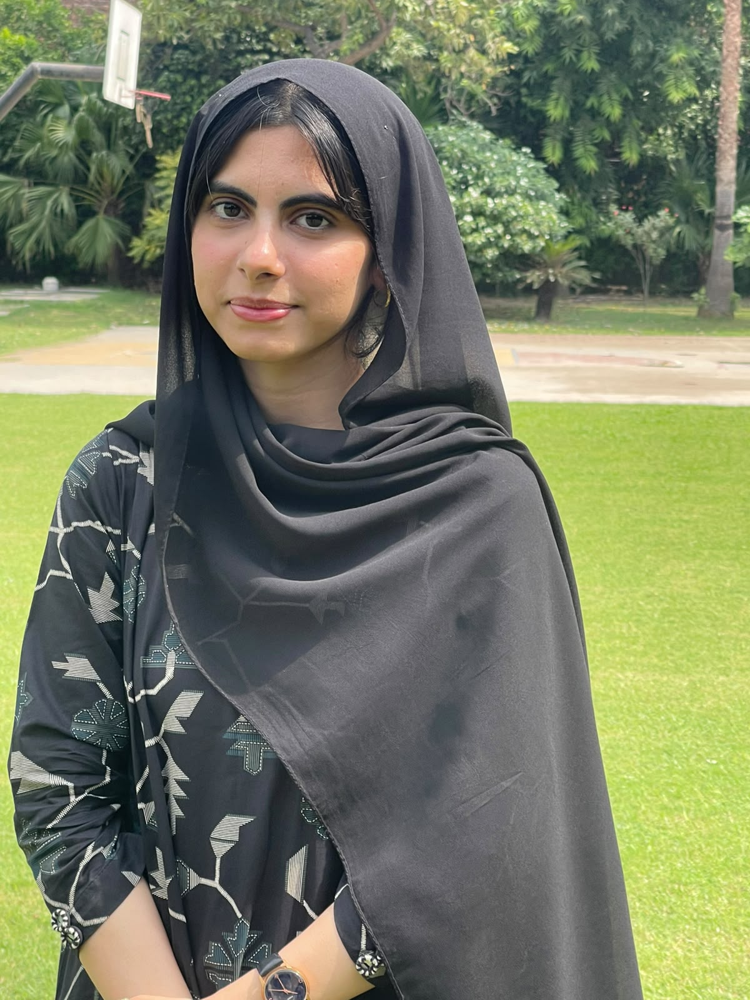

Hello, I’m Fatima Sohail.
Finding patterns.
Building models.
Making it useful.
BS Data Science student at GIFT University, exploring machine learning, computer vision, and data analytics. My projects span data cleaning, data mining, data warehousing, and interactive R applications, with tools including Hadoop and Docker—alongside web applications that bring ideas to life.
From curiosity to clarity.
DATA · MODELS · APPLICATIONScuriosity.fit(real_world)Always learning01 / SELECTED WORK
A little research.
A lot of building.
A selection of experiments, research, and applications. Built to understand the problem—and learn from the process.
02 / BEHIND THE WORK
Always asking
“what if?”

BS Data Science
GIFT University · Expected 2027
3.50 / 4.00 CGPAI like understanding what happens behind a prediction.
I’m Fatima, a BS Data Science undergraduate at GIFT University, Gujranwala (expected 2027), with a CGPA of 3.50/4.00. I’m interested in machine learning, data analytics, and full-stack development. My work moves from exploring datasets and implementing algorithms from scratch to building interfaces that make results easier to understand.
My current final-year research explores outlier-aware self-ensembling for few-shot 3D Gaussian Splatting. I’m investigating how to improve 3D reconstruction and novel-view rendering when only a few training views are available.
Understand the data
Question the model
Make it useful
03 / MY TOOLKIT
The tools behind
the thinking.
A growing toolkit, shaped by hands-on projects and a willingness to keep learning.
Data & machine learning
Python / PyTorch / R / Pandas / NumPy / Scikit-learn / Matplotlib / Seaborn
Models & research
Classification / Clustering / PCA / EfficientNet / Graph Attention / Grad-CAM
Systems & scale
SQL / PostgreSQL / Apache Spark / Hadoop / OpenMP / CUDA
Build & bring to life
React / Node.js / Express / MongoDB / HTML & CSS / R Shiny / Git
04 / LEARNING & PARTICIPATION
Learning beyond
the classroom.
Building a foundation through coursework, independent projects, and collaborative challenges.
Data analytics & machine learning
Google Advanced Data Analytics · Foundations of Data Science · The Nuts and Bolts of Machine Learning
Deloitte Australia — Forage
Data Analytics Job Simulation
Learning through collaboration
Harvard HSIL Hackathon · April 2026
InnovateX 2.0 Code Sprint, Junior Participant · August 2025
05 / THE NEXT CHAPTER
Good things start
with a conversation.
Have an internship, an interesting data problem,
or an idea we could build together? Let’s talk.